2026分子保险科技节：手回保险代理构建“线上+线下”协同发展新中介！
露从今夜白
White Dew solar term
点击蓝字，关注我们
手聚微光，回馈初心

1月13日，作为保险科技领域极具影响力的年度盛会，分子实验室2026分子保险科技节在厦门举行，本次大会汇聚了行业顶尖精英、领军企业代表与创新实践者，以前沿视角洞察行业趋势，为保险生态的创新发展搭建了高端交流平台。
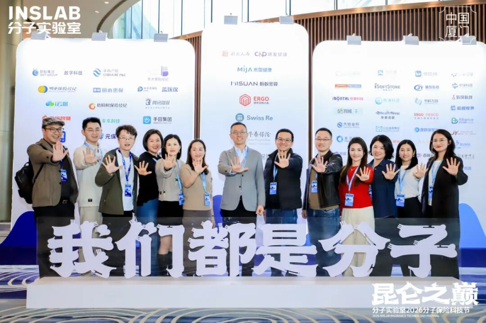
在这场行业盛宴中，手回保险代理以强大阵容惊艳亮相，母公司手回集团CEO光耀先生亲临现场，手回保险代理拟任执行董事刘丽女士带来主题演讲，多位核心合伙人深度参与圆桌论坛，全方位展现手回在保险中介领域的创新实力。
手回保险代理拟任执行董事刘丽
“线上+线下”协同发展的“新中介”
刘丽总的分享聚焦手回保险代理“线上+线下协同发展”的新中介核心模式。
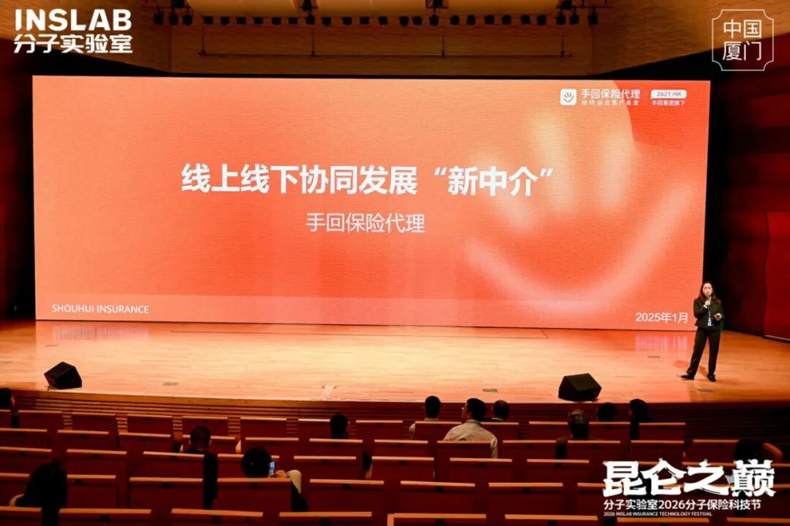
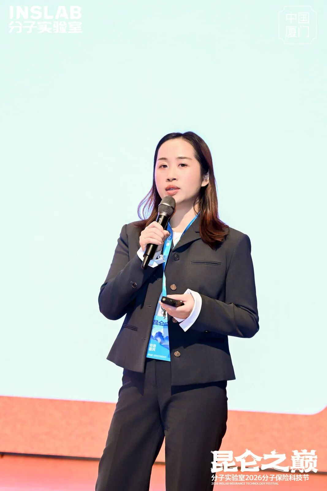
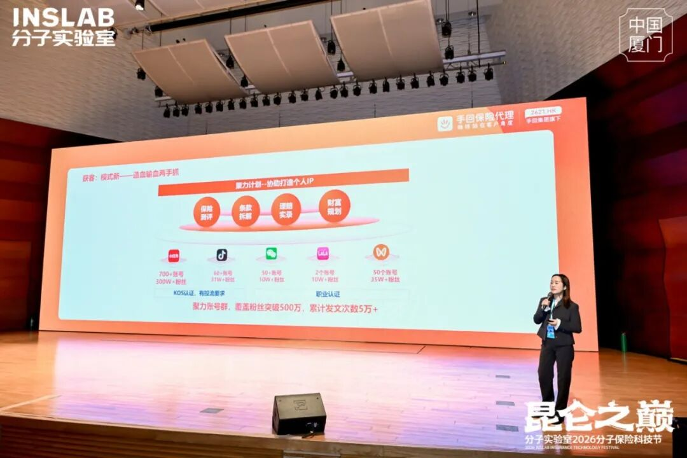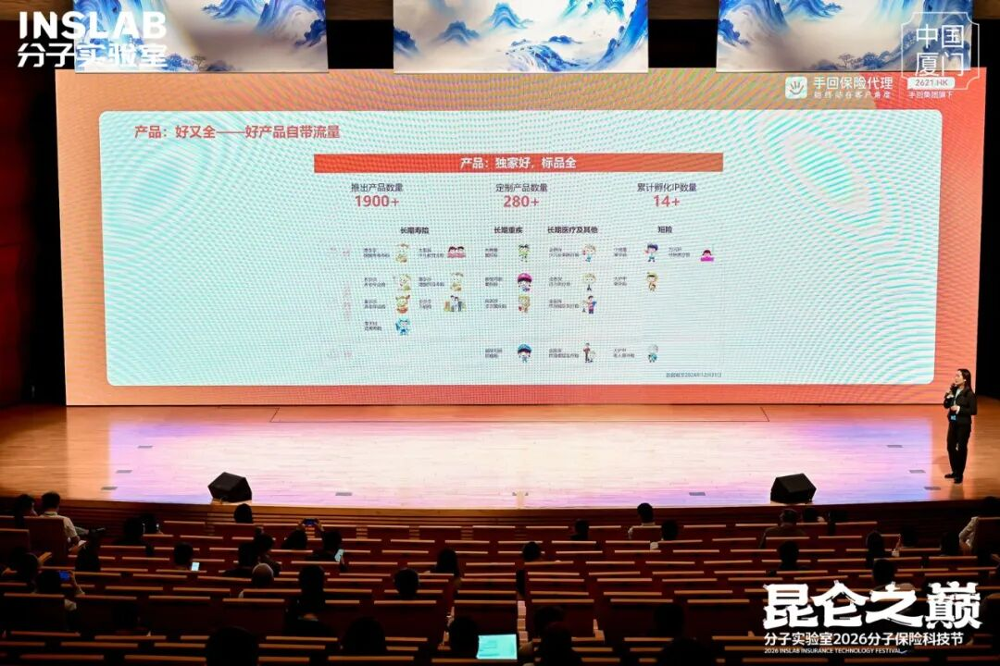
一、线上赋能：AI全域渗透
线上以咔嚓保平台为核心，构建全流程数字化展业体系。产品供给丰富多元，累计推出产品数量1900+与14款爆款IP，覆盖少儿、成人、老人全生命周期保障需求，且独家定制产品佣金优势明显，助力代理人精准匹配客户需求。
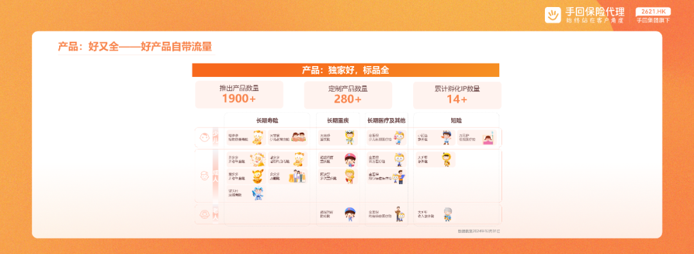
>>>>
科技工具端：
AI矩阵构建全场景支持。
AI智能核保“小智”凭借深度学习的医学数据库，可快速识别常见健康问题，精准定位疾病风险点，核保通过率提升40%，大幅降低非标体客户投保门槛；
啄木鸟风控系统实时排查投保风险，有效规避逆选择；
闪赔服务引入AICS智能理算系统整合理赔规则引擎，实现小额案件最快2分钟赔付完成，结案效率行业领先。
AI驱动的保单托管工具支持PDF上传、拍照识别、语音录入等多方式保单采集，提供缴费提醒、条款解读、续保预警等一站式服务；
AI小静智能客服7×24小时在线，凭借自然语言处理技术响应产品对比、条款查询、理赔咨询等核心问题，相当于为每位代理人配备专属智能助理，展业效率大幅提升。
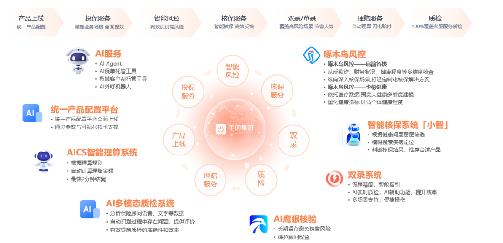
>>>>
获客转化端：
优客计划借助AI大数据分析，筛选26-45岁高意向精准客源，单客最高年缴保费达156万元，单个客户最高投保35件；聚力计划通过AI内容生成工具，为代理人自媒体矩阵提供产品测评、科普短视频、图文素材等标准化内容，覆盖全网500万+粉丝矩阵的流量加持，实现公域引流、私域转化的闭环。同时实时监测小红书、抖音等平台热点话题，自动生成贴合流量趋势的营销内容，如围绕 #百万医疗 #、# 税优保险 #等话题打造的爆款笔记，单话题最高曝光量达3600万+，助力代理人低成本获客。
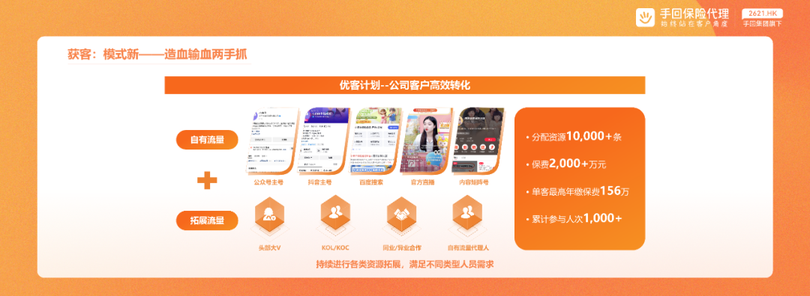
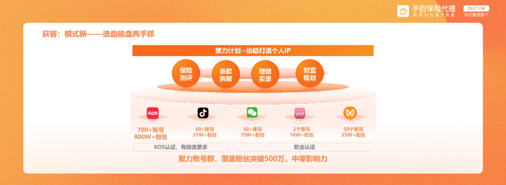
二、线下布局：服务本地化。架构扁平化
线下依托全国24家机构，覆盖京津、长三角、珠三角等核心经济区域，打造本地化服务网络。团队专业素养过硬，具备线上线下综合展业能力，人均年产能突出，可提供面对面咨询、定制化保障方案等专属服务，精准解决客户个性化需求。
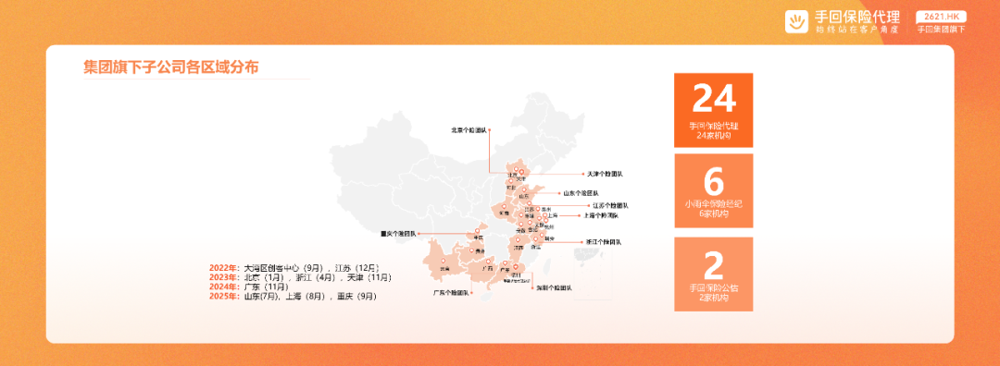
服务支持本地化落地，设立地域服务群实时同步产品信息与行业动态，定期组织保司交流、养老社区参观、高端医疗体验等牵益计划活动，增强客户信任；核保协助团队可针对非标体客户开展个性化争取，理赔专员专人专案跟进，提供保姆式指导，搭配行业首发的“慢必赔”服务承诺，让客户理赔更安心。
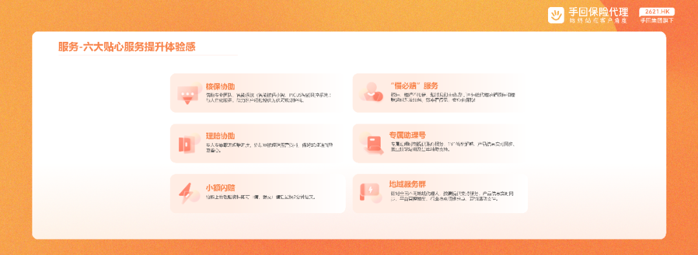
组织架构扁平高效，采用“总部赋能+机构支持”模式，利益向一线倾斜，通过平台招募与团队招募双通道，搭配专场COP、直播引流等增员支持，加速团队组建与发展。
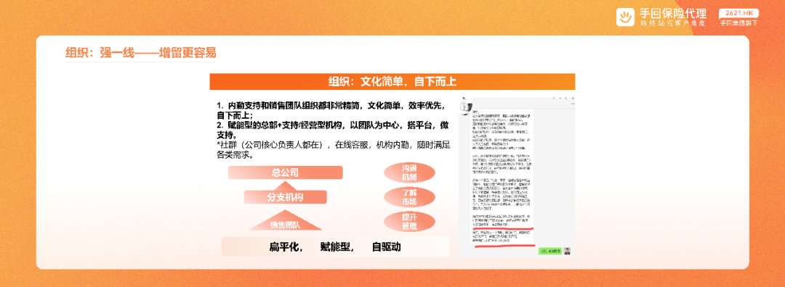
从2006年成立到2025年全新出发，手回保险代理完成了从“独立运营”到“集团合力”、从“单一标识”到“统一信任、从“单点链接”到“全链陪伴”的三大跨越。未来，公司将持续深化AI技术应用，推动线上线下协同模式迭代升级，以更智能的工具、更丰富的产品、更贴心的服务，为代理人赋能、为客户护航。
除主题演讲外，手回保险代理多位核心合伙人受邀参与五大圆桌会谈，聚焦行业热点议题，分享实战经验与深度思考，引发全场热烈反响。
圆桌论坛一：《破局与新生：中介渠道的下一场进化论》
手回保险代理广东分公司个险负责人陈元行
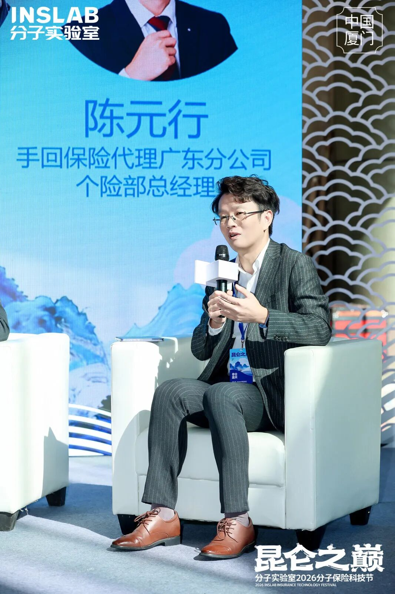
陈总指出，在行业深度转型背景下，保险中介渠道正经历从“渠道搬运工”到“专业价值创造者”的蜕变。面对代理人数量锐减、保费下滑等行业困境，中介的核心竞争力已从“我能卖什么”转向“我为客户解决了什么”。他强调，价值回归是方向，效率革命是路径，组织新生是落脚点，手回保险代理通过“聚力计划”“优客计划”构建赋能中台，以扁平化架构让利益向一线倾斜，成功实现逆势生长，为中介渠道的进化提供了清晰路径。
圆桌论坛二：《百岁人生：长寿时代下的全生命周期财富与健康管理》
手回保险代理浙江分公司合伙人邱益娇
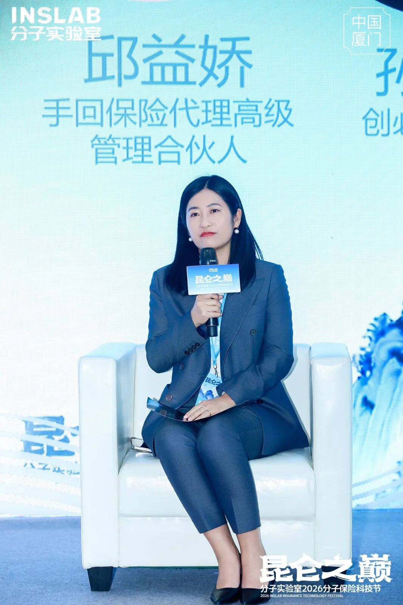
邱益娇女士分享了自己一线展业过程中的启示。她表示，长寿时代下，客户需求已从单一保单转向全生命周期的财富与健康解决方案，保险人需从“产品推销员”转型为“服务管家”。她通过真实案例阐述，保险人的核心价值在于成为“资源连接者”“专业规划师”与“长期陪伴者”，依托医养结合生态资源，将保险产品与康养服务深度融合，为客户提供覆盖医疗、养老、财富传承的全方位规划，真正守护客户的生活保障。
圆桌论坛三：《反向定制：代理人眼中的 “好产品 “与 “好服务”》
手回保险代理浙江分公司合伙人潘轶作
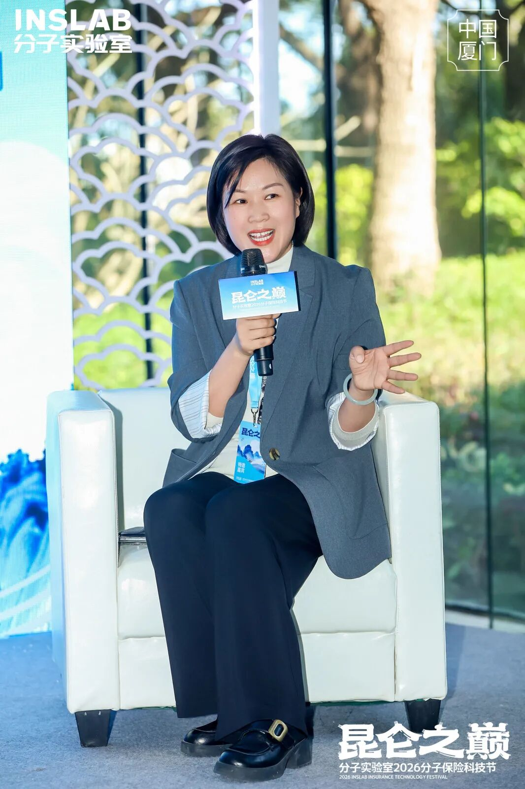
潘轶作女士在会谈中，结合自身经验，解读了“好产品”与“好服务”的核心内涵。她认为，“好产品”应具备保障全面、条款清晰、理赔顺畅三大特质，能够精准解决客户痛点，覆盖生命关键周期的多维需求，更要贴合客户不同人生阶段的多样化诉求，客户在成长过程中，教育金储备、养老规划等需求日益凸显，比如增多多、养多多等财富型IP产品，便伴随着客户需求迭代持续优化；而“好服务”的本质是始终站在客户角度，贯穿售前需求洞察、售中专业解读、售后持续陪伴的全过程。手回以“明白买，放心赔”为理念，通过反向定制打造了超级玛丽、大黄蜂、金医保等爆款产品，并依托科技赋能实现高效理赔与全程服务，让产品与服务形成良性互补。
圆桌论坛四：《数智驱动：AI 时代的超级个体与精细化管理》
手回保险代理广东分公司合伙人陈文龙
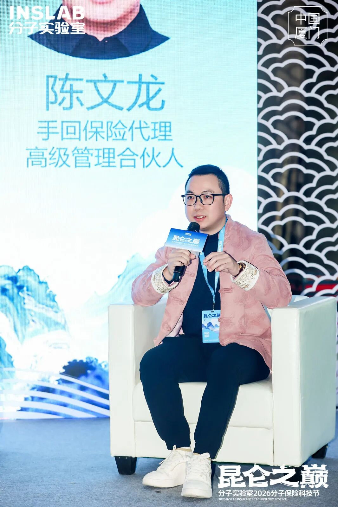
陈文龙在会谈中表示，AI 技术正在重塑保险行业的底层逻辑，不仅改变了行业的生存与发展模式，更在赋能个体保险人向“超级个体”与“超级 IP”进化。
比如我们日销医疗险，是保障一线业务员稳健成长与收入持续增长的重要动作，众多业务员已跑通闭环并实现了规模化获客。然而，庞大的客户量在带来增长的同时，也伴随着复杂、冗杂的过程管理。那么如何在海量线索中精准掘金，成为了业务员进阶的关键瓶颈，这正是我们必须依托 AI 及智能体技术进行深度赋能的根本原因。
在数智驱动下，精细化管理必须贯穿获客、转化、服务全流程：
前端，利用智能工具辅助内容生产与独立的数据分析复盘，让获客更精准高效；
中端，借助 AI 做好客户跟进的过程管理，解决“客户多、难维护”的痛点，大幅提升转化效率；
后端，通过智能体赋能（如智能续保提醒、闪赔、理赔协助等），将保险人从繁琐的事务性工作中彻底解放出来，使其专注于专业价值的创造。
圆桌论坛五：《信任变现：从流量到留量，打造个人 IP 的实战法则》
手回保险代理江苏分公司合伙人程斯文
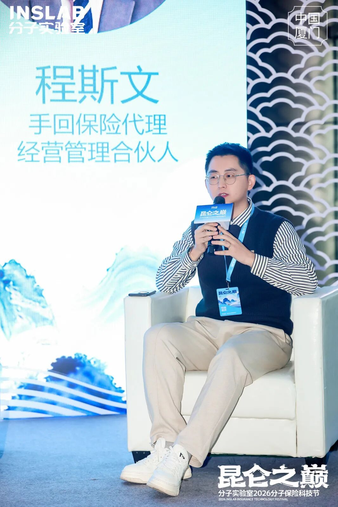
程斯文先生结合自身小红书运营实战经验，分享了流量转化与个人 IP 打造的核心逻辑。他指出，新媒体平台中，小红书是保险领域的“精准搜索种草”高地，有效流量的核心是“需求精准、有信任基础、可触达”。好内容需兼具痛点解决与专业信任传递，AI可提升内容产出效率，但无法替代核心专业价值。从流量到留量，关键在于构建信任闭环与全周期服务，通过私域需求分析、“慢必赔”服务案例建立信任，以保单托管、年度理赔协助等持续服务实现流量转化，其团队凭借这套逻辑实现了98%+的续保率、700+的转介绍量、加V客户3500+，年成交保单4000+优秀成绩。
此次分子保险科技节上，手回保险代理通过主题演讲与圆桌论坛的多环节参与，全面展现了其在保险中介领域的核心竞争力与行业前瞻性。未来，手回保险代理将继续秉持“始终站在客户角度”的理念，以科技赋能为引擎，以专业服务为核心，持续探索行业进化新路径，与行业同仁携手共建更健康、更可持续的保险生态。

扫描左方二维码
添加小助理
了解更多
本文由 ShawnCH（何智翔）轉發，透過微信聊天記錄自動提取並整理。 原文連結：https://mp.weixin.qq.com/s?__biz=Mzg4Njg3NTM3Nw==&mid=2247505301&idx=1&sn=b0778015fd163899364bb0f327b80a75&chksm=ce8101565db206aaa042fadcdb279ab76aebcaf31780d97fcd40aa9d9b9bf90075959151be02&mpshare=1&scene=1&srcid=0115qgo2m1Lm7nrIKMRUGdZD&sharer_shareinfo=887b65d36eb22b1cfc6c8bc4e17d6ed7&sharer_shareinfo_first=17fe5c4753ed951402302c4d6202b044#rd